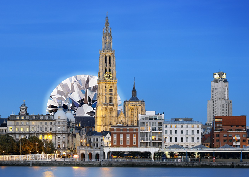
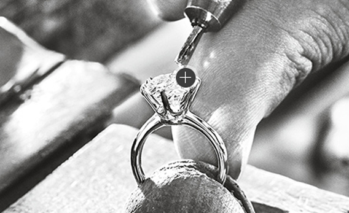

- 索菲思珠宝
-
 SOFIS JEWEL
SOFIS JEWEL
- 首 页
- 钻 石
- 配 饰
- 珠 宝
- 彩 宝
- 私人定制
-
 我的收藏
登录 / 注册
我的收藏
登录 / 注册
- 
-
比利时的安特卫普享有数百年历史的“安特卫普切工”，是完美成品切工钻石的代表; 是世界上最负盛名的“钻石之都”。世界上第一颗被切割好的钻石就是在1447年诞生于比利时安特卫普的。安特卫普也是全球最大的钻石交易地，世界上一半以上的成品钻石和80% 钻石毛坯都是在这里交易的。
SOFIS JEWEL索菲思珠宝位于安特卫普的钻石交易所内，掌握一手货源， 资深钻石分级师为每一位客户认真挑选钻石
- 品牌故事
-
-
-

-
SOFIS JEWEL 索菲思珠宝创始人任洁，出生于四川成都， 一个美丽而时尚的城市。 2001年赴欧留学并获得硕士学位。 毕业后一直在钻石行业里工作，并对钻石这种闪闪发光的特殊的石头一直有着浓厚的兴趣。
2016年，她考取了IGI的珠宝鉴定师的资格证书并积极的投身于为客户寻找完美钻石的开拓路上。
- +